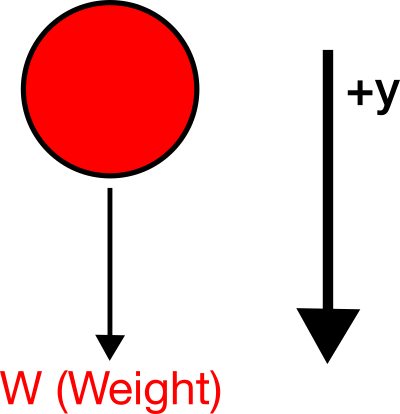
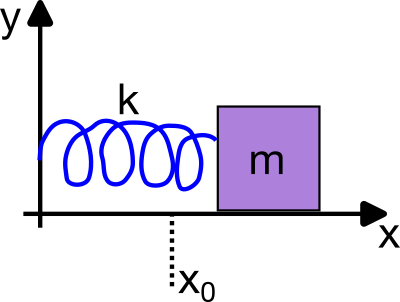
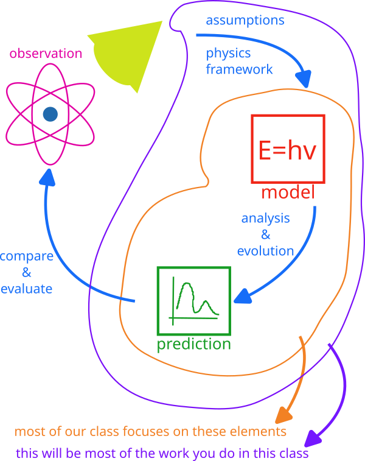
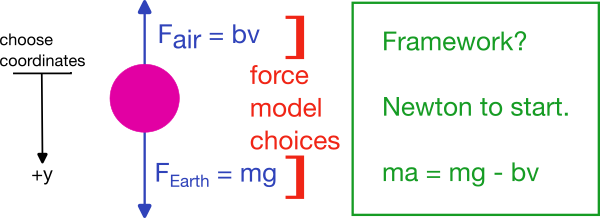

03 - What is Mathematical Modeling?#

Handwritten Notes
Learning Goals#
After studying Lesson 03, you should be able to:
Define the concept of a “model” in physics and explain its role in predicting and explaining natural phenomena.
Differentiate between various types of observations (e.g., qualitative, quantitative, historical) and their significance in building models.
Develop equations of motion (EOM) for simple physical systems, such as a falling object or a simple harmonic oscillator.
Analyze the iterative process of refining models based on experimental observations and theoretical predictions..
Nature reveals itself to us through interactions. We can tell from observations that it is nature’s interactions that lead to its evolution. Explaining how nature can change and predicting how it will change in the future is our work as scientists. In this our work, we observe nature and its interactions to make models of those observations. We aim to predict and explain our observations of nature through building and testing mathematical models.
In physics, our goals are typically to explain and predict observations of physical phenomenon. Here, we focus ourselves to those canonical things that physicists concern themselves with: motion, fields, waves, atoms, nuclei, and so on.
Why the word “observation”?
We intentionally use the word “observation” in our discussion of modeling, because we are not simply talking about what we can see with our eyes. The visible spectrum is limited to a small portion of the electromagnetic spectrum.
These observations can come in the form of light, but also as sound, voltage, or current. For example, most instrumentation in laboratories will report only voltages or currents – rather voltages and currents are what the equipment will measure precisely and report as measurements as different as distance and shear stress response.
We also use “observation” because it includes the historical science that conducted qualitative investigations and conceptual observations. It is also inclusive of the work of early humans and indigenous people who made observations and constructed ways of knowing and explaining the world around them.
The word observation respects the common human endeavor of trying to understand and explain the natural world; an activity that all human civilizations and cultures have participated in for millennia.
What is a model?#
Physics is a science that builds models. Typically, these models are represented mathematically in the form of equations or formula, but we can use charts, graphs, and animations to represent our models. Models used in physics are often constructed by a community of scientists who have agreed on the model’s utility and accuracy. Physics is, after all, a social endeavor – a global activity in which humans exchange and evaluate ideas and perform labor to produce new knowledge and practices. Experimental observations are used to validate these models. This experimental evidence can be table-top work conducted at the scale of a single lab or small set of experiments, or a big scientific endeavor with many moving parts and people such as DUNE, the LHC or LIGO.
Modeling is the process of constructing a model. This process is often iterative where the initial ideas and assumptions are used to formulate a model. It is then tested against observations, experience, and expectations, and, later refined. This process is repeated until the model is accurate enough to be useful. Physicists are model builders and model users. There is an enormous body of literature in natural philosophy, history of science, science education, and elsewhere covering the idea of a model and concepts and practices of modeling.
Suffice to say, academics can spend a lot of time talking about the things that we are doing everyday.
History and Philosophy of Science#
If you would like to dive deeper into models and modeling, there’s excellent work in the history and philosophy of science. The field studies how science develops knowledge, practice, culture, and so on. It studies important events and provides critical information on important and, often, overlooked folks who do science. For example, historian and gender studies professor Sharon Traweek studies the high energy physics field. Her book, Beamtimes and Lifetimes: The World of High Energy Physicists is excellent.
Dame Nancy Cartwright (philosopher of science)
One of the more interesting scholars is Dame Nancy Cartwright who wrote a lot about the ‘practice of science.’ Her philosophical work informed many of the innovations in physics and broader science education – including many science courses at MSU.
Her writing is very interesting, but the style of writing can be a challenge to read. This is the nature of academic writing in different disciplines. Her book called “How The Laws of Physics Lie” is worth a read. Here’s a link to the first chapter.
Short Film on Modeling in Science (8 minutes)
Geoscientist John Aiken made this short video when he was a graduate student at Georgia Tech. John cut clips from a lecture Richard Feynman gave. In this lecture, Feynman talks about the nature of models and the process of science. John also interviewed different science researchers and teachers about their understanding of what a model is.
Feynman on the Process of Science (10 minutes)
Richard Feynman was a physicist who made significant contributions to physics, especially in the field of quantum mechanics. He was awarded the Nobel Prize in Physics in 1965 for his work in quantum electrodynamics. In his time, he was known as a great teacher and communicator of physics. And his lectures are still used in physics education today – even for planning our classes.
Feynman was a gifted communicator; his lectures are lively and conceptual. Here’s the longer version of the lecture he gave on the nature of models and the process of science.
Richard Feynman’s Legacy
While we acknowledge the importance of Feynman’s contributions to physics and physics teaching, we should remind ourselves that he was not a perfect person. Feynman was also known for his sexist behavior and comments. (Trigger warning: this link recounts instances of harassment)
We should not ignore this aspect of his life, and remind ourselves that we can learn from his physics and make a welcoming space for all people. These are not mutually exclusive positions to hold.
Making Classical Models#
The central enterprise of physics is making and testing models of physical systems. These models we developed are based on the assumptions we make about the physical systems we are studying. As we characterize the system, we make simplifying assumptions that allow us to describe the system in terms of a few key quantities. These quantities are often called the “degrees of freedom” of the system.
In Classical Mechanics, we will use formulations of physics, such as Newton’s Laws, to describe the motion of particles. We can also use the Lagrangian and Hamiltonian formulations of mechanics. These formulations are mathematical expressions of the physical laws that govern the motion of particles. They borrow from the idea that Newton’s Laws are but an expression of a deeper principle, that nature works to minimize the “action”. This is not energy! The action, as we will learn, is a quantity that provides theoretical constraints on the ways that a system may travel through all possible points in its phase space. And if this reads like a word salad, that’s ok for now. We will get there.
Typically, the models we develop are expressed as differential equations that describe how the system evolves in time. Our work in classical mechanics is to develop techniques and tools that let us investigate the solutions (later, families of solutions and qualitative different phases spaces) to these equations. These differential equations are commonly called equations of motion (EOM). An equation of motion describes the evolution of the agents (particles) as they interact with their surroundings and each other.
What is Dynamics?#
Dynamics is the study of the time evolution of any system in question. In classical mechanics, dynamics is the study of the motion of particles and the forces that cause that motion. In other physics, dynamics can refer to the study of the evolution of a system in time and space. And here, space might be an abstraction, such as a phase space. We study phase spaces later.
Dynamics is a general term used frequently to mean the same thing in fields as distinct as economics, education, political science, engineering, biology, and chemistry. You might have read about population models, voter pattern evolution, or even chemical kinetics. All of these are examples of dynamics of various systems.
When studying dynamics goes wrong
Interestingly, we can, in part, blame the 2008 financial crisis on how dynamics were modeled, not just on the presence of complex mathematics. Quantitative analysts—often with training in physics or mathematics—were solving partial differential equations and related models to describe market behavior, but these tools were transplanted from well-understood physical systems into a domain with far less control over assumptions and data. The techniques themselves were powerful; the problem was that they rested on fragile, poorly examined initial conditions and idealizations about correlations, liquidity, and rare events, turning elegant equations into dangerously misleading guides.
Crucially, these modeling failures did not occur in a vacuum. They unfolded inside a financial system organized around extracting value from the expertise, experience, and labor of working people while channeling gains upward to corporations and billionaires. In that context, models became part of a pipeline of exploitation: they were used to justify complex financial products, aggressive lending, and high leverage, while masking the risks that would eventually be offloaded onto workers through foreclosures, unemployment, and cuts to public services.
The issue is not simply “too many physicists in finance,” but that technically sophisticated modeling was enlisted—often uncritically and sometimes incompetently—to serve a system whose deepest impacts were borne by those with the least power to shape it.
Newtonian Examples of Classical Models#
From a Newtonian perspective, our equations of motion are often second-order differential equations. This stems from the fact that Newton’s second law relates the acceleration of a particle to the forces acting on it and that the second derivative of position is acceleration. The second law is given by the equation:
where \(\vec{x}\) is the position vector and \(\ddot{\vec{x}}=\frac{d^2\vec{x}}{dt^2}\) is the acceleration vector. Thus, Newton’s second law is a general EOM that describes the dynamics of a particle of mass, \(m\):
Example: Falling Ball with No Air Resistance#
Consider a ball of mass \(m\) falling down. We define the positive \(y\) direction to be down as in the figure showing the FBD of the ball.
{kind=link}

Fig. 6 Free Body Diagram of a falling ball; the arrows label the direction of forces acting on the ball. SVG File#
{kind=link}
We can apply Newton’s laws to obtain the specific EOM for the ball.
This is a 1D case in the \(y\) direction,
Thus,
is the specific EOM for the ball.
Example: Simple Harmonic Oscillator#
We will spend a lot of time studying the simple harmonic oscillator (SHO). The SHO is a system that oscillates back and forth around an equilibrium position. It is a very common system in physics and is used a base model for many more complex systems. Consider a mass, \(m\), attached to a spring with spring constant, \(k\), sitting on a frictionless horizontal plane as in the figure below.
{kind=link}

Fig. 7 Free Body Diagram of a Simple Harmonic Oscillator; the arrows label the direction of forces acting on the mass. SVG File#
{kind=link}
The EOM for the SHO can be derived form Newton’s Second Law.
This is a 1D case in the \(x\) direction,
And thus,
is the specific EOM for the SHO. As we will learn, this restoring force causes the mass to oscillate back and forth around the equilibrium position, with a well known frequency, \(\omega = \sqrt{\dfrac{k}{m}}\).
Turning Observations into Models#
One of the more challenging aspects of physics is how we work to make models of the observations we have. This a long and challenging process in general, but if we have a general schematic, we can make progress. The hand drawn figure below provides such a schematic.
{kind=link}

Fig. 8 Framework for making models: Schematic diagram showing the process of turning observations into models in physics. SVG File#
{kind=link}
In the schematic, our observations are the starting point. Using our framework for physics (e.g., Newton’s Laws) and making the appropriate assumptions (in blue), we can develop a model (in red) of the system. By conducting analysis and investigating the evolution of the model, we produce predictions (in green). We can then compare those predictions to our observations to evaluate how well our model describes the system.
In this class, we mostly focus on the elements circled in purple where we develop models, and use them to predict. The core part of this class is the orange circled elements of modeling and predicting. We will spend a lot of time developing the tools and techniques to make these predictions.
Modeling Process#
Making models of physical systems is greatly helped by considering the following steps:
Identify the phenomenon or system of interest.
Identify the interactions the system has with its surroundings.
Choose an appropriate physics framework to investigate the system (Newton? Lagrange? Hamilton? Continuous or Discrete?).
Sketch the system and identify the interactions, name them, and assign them to the appropriate framework.
Choose your coordinate system and define your variables.
Apply the appropriate physics framework to the system.
Obtain the equations of motion, and make predictions.
Let’s return to an example you have seen before: the falling ball.
Example: Falling Ball in 1D#
Consider a ball of mass \(m\) falling with air resistance. Here, we have already done some of the work above. We have identified the phenomenon, and started to indicate the interactions.
{kind=link}

{kind=link}
In the figure above, we have identified the forces acting on the ball. We have the gravitational force, \(W = mg\), and the air resistance, \(F_{\text{air}}\). We have chosen the linear model for air-resistance, which is a choice of model given the assumption that the ball moves very slowly – this is not a good assumption in this case, but makes the mathematical analysis simpler. We also selected the gravitational interaction model as a constant force near the surface of the Earth, thus neglecting variations in \(g\) with height or location.
We have also chosen our coordinate system, with the positive \(y\) direction pointing down.
We choose a Newtonian framework for our physics because we are familiar with it. And thus, we can develop the EOM:
In 1d,
So that the EOM is,
Question: What happens with \(\ddot{y} = 0\)?#
Once the ball has no acceleration, the two forces are balanced. This is the terminal velocity of the ball. We can solve for this by setting \(\ddot{y} = 0\):
This is the terminal velocity of the ball for linear drag. When the ball reaches this speed (and does so asymptotically), the forces are balanced and the ball will fall at a constant speed.
Question can we solve this differential equation?#
The differential equation \(\ddot{y} = g - \dfrac{b}{m}v\) is a second-order differential equation for \(y\). We can solve this equation analytically by recasting it as a first-order differential equation for \(v\), which we solve for and then integrate to find \(y(t)\).
We will do that later, for now, let’s hack off the drag bit and return to the simple falling ball. Our simplified EOM is:
Note this is written as a second order ODE for \(y\):
It is possible also to recast these kinds of second-order differential equations as a pair of 1st order differential equations for \(y\) and \(v\):
This is a common technique in physics and engineering to solve second-order differential equations. Let’s solve this for completeness.
We can integrate:
We obtain the velocity as a function of time for constant acceleration:
Now we can integrate the velocity to obtain the position as a function of time:
We obtain the position as a function of time for constant acceleration, the standard kinematic equation:
Why the ‘plus’ sign on the last term? Because we choose positive \(y\) to be down, and the ball is accelerating down.
Kinematic equations
In this analysis we produced kinematic equations for an object experiencing a constant force in one dimension:
This result is really useful, but is contingent on finding or knowing the anti-derivative of the functions that we are integrating. For the case of a constant force, it is the case that these kinematic equations are always representative.
But, finding an appropriate anti-derivative is not always possible. What might we do if we weren’t sure that we could find the anti-derivative?
Discrete Formulation of Newtonian Mechanics#
Most of our experience so far has been solving problems where we can find continuous functions that are the anti-derivatives of the functions we are integrating. This leads to standard formulae that we can use to predict or plot our results.
However, there are very few systems for which we can write down EOMs that have known analytical solutions. In these cases, we need to turn to numerical methods to solve the equations of motion. To do this, we need a discrete formulation of the EOMs.
For now, let’s focus on 1D:
We can write this as a pair of first-order differential equations:
Let’s allow ourselves to consider instead a small time interval of the evolution, \(\Delta t\). We can then write the velocity equation as:
We can turn this into a discrete equation by multiplying through by \(\Delta t\):
And then use that to make a prediction of the velocity at the next time step:
This is the “velocity update” equation, or more generally, the Euler step for velocity. Given the information at time \(t\), \(F(t)\), \(m\), and \(v(t)\), we can predict the velocity at the next time step.
Great! But that is just for velocity, can we do the same for position?
Yes
We can use the same logic to predict the position at the next time step:
If we discretize this, we realize we just have the definition of the average velocity:
We can then write the position update equation:
What is left is to determine what should be the estimate for \(v_{\textrm{avg}}\).
Choosing \(v_{\textrm{avg}}\)
The idea that we have to pick a value for \(v_{\textrm{avg}}\) is a key point in numerical methods. It might seem silly or overly subtle and it is certainly the latter. We can select \(v(t)\), \(v(t+\Delta t)\), or some average of the two. The choice of \(v_{\textrm{avg}}\) is the key to the accuracy of the method.
As we will show in a later homework, the best choice is \(v(t+\Delta t)\) as it preserves the energy of the system.
Euler-Cromer Step#
Taking the definition of \(v_{avg}\) to be the predicted velocity, we obtain the Euler-Cromer step for the position and velocity:
This method was accidentally discovered by a high energy physics student called Abby Aspel. It was later explored by Alan Cromer who wrote up this method in the American Journal of Physics.
In three-dimensions, this method is simply written in a vector form:
Erasing Contributions in Physics
This method is called the Semi-Implicit Euler method or the Euler-Cromer method. It should be called the Euler-Aspel-Cromer method because Euler started it, Aspel improved it, and Cromer formalized it.
It is not called that because physics and physicists tend to erase the contributions of marginalized groups including young people, women, and folks from non-dominant groups.
Don’t believe it?
Read about the history of the MIT physics department and try to find the contributions of the many technical staff, non-tenure track faculty, and students who have made the department what it is today.
Abby Aspel deserves recognition for her discovery as much as Alan Cromer does for writing up a readable, useful, and well-cited article on the method. To Alan Cromer’s credit, he quite clearly identifies Abby as having discovered the method while working on Kepler problems.
Analytical Solutions to the Air-Resistance Problem#
While we have made a big deal about numerical solutions, it turns out that we can solve the air-resistance problem analytically, at least, in one-dimension with up to \(v^2\) drag.
We start with the EOM for velocity that we derived previously
Linear Drag#
Let’s take the linear limit first, \(c=0\).
We can solve this equation by separating variables:
We can integrate both sides:
We can solve for \(v(t)\):
We can solve for the constant \(C\) by using the initial condition \(v(0) = v_0\):
When \(v_0 = 0\), we find:
And as \(t \to \infty\), we find the terminal velocity:
Quadratic Drag#
In the case of quadratic drag, we have:
We can find the terminal velocity by setting \(\dot{v} = 0\):
Thus, we recast the problem in terms of the terminal velocity:
We can separate variables and integrate:
Assume we start at rest, \(v(0) = 0\)#
We can solve for \(v(t)\), by using the proper limits:
This is a known integral and yields:
With the initial condition \(v(0) = 0\), we find:
And thus, we find the velocity as a function of time:
As \(t \rightarrow \infty\), the \(\tanh\) will tend to 1, and thus the system approaches the terminal velocity,